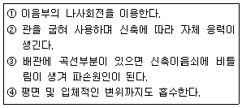
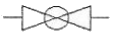
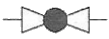
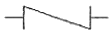
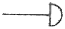
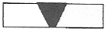
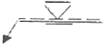
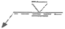
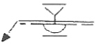
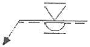

배관기능장 (2013-04-14 기출문제)
1과목: 임의구분
1. 일반적인 기송 배관의 형식이 아닌 것은?
- 진공식
- 압송식
- 진공 압송식
- 분리기식
(정답률: 90%)

2. 피드백베어(feed back control)의 종류가 아닌 것은?
- 정치제어
- 추치제어
- 프로세스제어
- 조건제어
(정답률: 51%)
3. 자동제어계의 검출기에서 검출된 신호가 아주 작거나 조절기의 신호에 적합하지 않을 경우 검출신호를 증폭하거나 다른 신호로 변환하여 보내는 장치는?
- 지시기
- 전송기
- 조절기
- 조작기
(정답률: 65%)
4. 제동제어장치에서 기준입력과 검출부 출력을 합하여 제어계가 소요의 작용을 하는데 필요한 신호를 만들어 보내는 부분으로 맞는 것은?
- 비교부
- 설정부
- 조절부
- 조작부
(정답률: 79%)
5. 트랩의 봉수가 모세관 현상에 의하여 없어지는 경우의 조치사항으로 가장 적당한 것은?
- 트랩 가까이에 통기관을 세운다.
- 머리카락 같은 이물질을 제거한다.
- 기름을 흘려보내 봉수가 없어지는 것을 막는다.
- 배수구에 격자를 설치한다.
(정답률: 83%)
6. 난방배관에서 리프트 피팅에 대한 설명으로 틀린 것은?
- 진공 환수식일 때 사용한다.
- 1단의 높이를 1.5m 이내로 한다.
- 응축수를 끌어 올릴 때 사용한다.
- 입상관은 환수주관 구경보다 1~2사이즈 이상 큰 관을 사용한다.
(정답률: 79%)
7. 길이 30cm되는 65A 강관의 중앙을 가스절단을 한 후 절단부위를 다루는 방법으로 가장 안전한 방법은?
- 관에 손가락을 끼워서 든다.
- 장갑을 끼고 손으로 잡는다.
- 단조용 집게나 플라이어로 잡는다.
- 절단 부위에서 가장 먼 곳을 맨손으로 잡는다.
(정답률: 95%)
8. 보일러 취급자의 부주의로 인하여 발생하는 사고의 원인으로 맞는 것은?
- 재료의 부적당
- 설계상 결함
- 발생증기 압력의 과다
- 구조상의 결함
(정답률: 95%)
9. 배관설비의 진공시험에 관한 설명으로 틀린 것은?
- 기밀시험에서 누설 개소가 발견되지 않을 때 하는 시험이다.
- 주위 온도의 변화에 대한 영향이 없는 시험이다.
- 관 속을 온도의 변화에 대한 영향이 없는 시험이다.
- 진공펌프나 추기 회수장지를 이용하여 시험한다.
(정답률: 86%)
10. 150A 관의 내경은 155mm이다. 이 관을 이용하여 매초 1.5m의 속도로 물을 수송하고 있다. 2시간 동안 수송된 물의 양은 약 몇 m3 정도인가?
- 102
- 136
- 155
- 204
(정답률: 66%)
11. 122°F는 섭씨온도와 절대온도로 각각 얼마인가?
- 50℃, 323K
- 55℃, 337K
- 60℃, 509K
- 50℃, 581K
(정답률: 70%)
12. 화학설비 장치 배관재료의 구비 조건으로 틀린 것은?
- 접촉 유체에 대해 내식성이 클 것
- 크리프(creep) 강도는 적을 것
- 고온 고압에 대하여 기계적 강도가 있을 것
- 저온에서 재질의 열화(劣化)가 없을 것
(정답률: 86%)
13. 냉각탑의 공기 출구에 물방울이 공기와 함께 유출하지 못하도록 설치하는 것은?
- 일리미네이터
- 디스크 시트
- 플래쉬 가스
- 진동 브레이크
(정답률: 92%)
14. 산 세정에 관한 설명 중 올바른 것은?
- 주로 탈지세정을 목적으로 실시한다.
- 약액 조성은 제3인산소다+소다회+계면활성제이며 세정시간은 68시간 정도이다.
- 플랜트 내부의 스케일을 기계적으로 전부 제거할 수 있는 방법이다.
- 수세(水洗)를 한 후에는 하이드라진, 아질산염, 인산염 등에 의해 모재효면에 방청피막을 형성시켜야 한다.
(정답률: 80%)
15. 장치의 운전을 정지시키지 않고 유체가 흐르는 상태에서 수리하는 방법으로 흐르고 있는 유체를 막을 수 없을 때 사용하는 응급조치 방법으로 맞는 것은?
- 플러깅(plugging)법
- 스토핑박스(stopping box)법
- 박스설치(box-in)법
- 인젝션(injection)법
(정답률: 82%)
16. 상수도 시설기준에서 급수관의 매설심도에 관한 설명으로 잘못된 것은?
- 일반적으로 공ㆍ사도에서 매설심도는 35cm이상으로 하는 것이 바람직하다.
- 한랭지에서는 그 지방의 동결심도보다 더 깊게 매설한다.
- 도시의 지하매설물 규정에 매설심도가 정해져 있을 경우에는 그 규정에 따른다.
- 도시의 지하 매설물 규정에 매설심도가 정해져 있지 않을 경우에는 매설장소의 토질, 충격 등을 충분히 고려하여 심도를 결정한다.
(정답률: 87%)
17. 세정식 집진법을 형식에 따라 분류한 것으로 맞는 것은?
- 유수식, 원통식
- 충돌식, 회전식
- 평판식, 가압수식
- 유수식, 가압수식
(정답률: 78%)
18. 수공구 사용에 대한 안전 유의사항 중 잘못된 것은?
- 사용 전에 모든 부분에 기름을 칠하고 사용할 것
- 결함이 있는 것은 절대로 사용하지 말 것
- 공구의 성능을 충분히 알고 사용할 것
- 사용 후에는 반드시 점검하고 고장부분을 즉시 수리의뢰할 것
(정답률: 95%)
19. 난방부하가 29kW일 때 필요한 온수난방의 주철방열기의 필요 방열면적은 약 얼마인가? (단, 표준방열량은 증기인 경우 0.756kW/m2이고, 온수인 경우 0.523kW/m2이다.)
- 39.8m2
- 55.4m2
- 72.6m2
- 88.8m2
(정답률: 45%)
20. 구조가 간단하며 효율이 높고 맥동이 적어 널리 사용되고 있는 터보형 펌프의 종류에 해당되지 않는 것은?
- 원심펌프
- 제트(jet)펌프
- 축류펌프
- 사류펌프
(정답률: 78%)
2과목: 임의구분
21. 글랜드 패킹의 종류가 아닌 것은?
- 오일시트 패킹
- 석면 야안 패킹
- 아마존 패킹
- 모울드 패킹
(정답률: 66%)
22. 온도조절기나 압력조절기 등에 의해 신호 전류를 받아 전자 코일의 전자력을 이용 자동적으로 개폐시키는 밸브의 명칭은?
- 전동밸브
- 팽창밸브
- 플로트밸브
- 솔레노이드밸브
(정답률: 90%)
23. 앵글, 환봉, 평강 등으로 만들어 파이프의 이동을 방지하기위한 지지물을 장치하기 위해 천정, 바닥, 벽 등의 콘크리트에 매설하여 두는 지지금속으로 맞는 것은?
- 인서트(insert)
- 슬리브(sleeve)
- 행거(ganger)
- 앵커(anchor)
(정답률: 83%)
24. 폴리부틸렌관에 대한 설명으로 가장 적합한 것은?
- 일명 엑셀 온돌 파이프라고도 한다.
- 곡률 반경을 관경의 2배까지 굽힐 수 있다.
- 일반적인 관보다 작업성이 우수하나 결빙에 의한 파손이 많다.
- 관을 연결구에 삽입하여 그래브링(grab rinng)과 O-링에 의한 접합을 할 수 있다.
(정답률: 78%)
25. 엘보는 유체의 흐름방향을 바꿀 때 사용되는 이음쇠로 25mm(1")강관에 사용하는 용접이음용 롱엘보의 곡률반경은 몇 mm인가?
- 25
- 32
- 38
- 45
(정답률: 75%)
26. 다음 보기에 설명한 신축 이음쇠의 특징 중 어느 한가지의 항목에도 해당되지 않는 신축이음쇠는?

- 볼조인트형 신축 이음쇠
- 슬리브형 신축 이음쇠
- 벨로스형 신축 이음쇠
- 스위블형 신축 이음쇠
(정답률: 62%)
27. 증기관 및 환수관의 압력차가 있어야 응축수를 배출하고, 환수관을 트랩보다 위쪽에 배관할 수 있는 트랩은 어느 것인가?
- 버킷 트랩(bucket trap)
- 그리스 트랩(grease trap)
- 플로트 트랩(float trap)
- 벨로우즈 트랩(bellows trap)
(정답률: 69%)
28. 염화비닐관의 단점을 설명한 것 중 틀린 것은?
- 열팽창률이 크기 때문에 온도ㆍ변화에 대한 신축이 심하다.
- 50℃이상의 고온 또는 저온 장소에 배관하는 것은 부적당하다.
- 용제와 방부제(크레오소트액)에 강하나 파이프접착제에는 침식된다.
- 저온에 약하며 한냉지에서는 외부로부터 조금만 충격을 주어도 파괴되기 쉽다.
(정답률: 74%)
29. 압력계에 대한 설명 중 틀린 것은?
- 고압라인의 압력계에는 사이폰관을 부착하여 설치한다.
- 유체의 맥동이 있을 경우는 맥동댐퍼를 설치한다.
- 부식성 유체에 대해서는 격말시일(seal) 또는 시일포트(seal port)를 설치하여 압력계에 유체가 들어가지 않도록 한다.
- 현장지시 압력계의 설치위치는 일반적으로 1.0m의 높이가 적당하다.
(정답률: 82%)
30. 외경 10mm인 강관으로 열팽창길이 10mm를 흡수할 수 있는 신축곡관을 만들 때 필요 곡관의 길이는 얼마인가?
- 64cm
- 74cm
- 84cm
- 94cm
(정답률: 46%)
31. 주철관에 대한 설명 중 틀린 것은?
- 강관에 비해 내식 내구성이 크다.
- 주철관 제조법은 수직법과 원심력법 2종류가 있다.
- 구상흑연 주철관은 관의 두께에 따라서 1종관~6종관까지 6종류가 있다.
- 수도, 가스, 광산용 양수관, 건축용 오배수관 등에 널리 사용한다.
(정답률: 65%)
32. 스테인리스강관의 특성에 대한 설명으로 틀린 것은?
- 내식성 우수하여 계속사용 시 내경의 축소, 저항 증대 현상이 없다.
- 위생적이어서 적수, 백수, 청수의 염려가 없다.
- 강관에 비해 기계적 성질이 우수하고, 두께가 얇고 가벼워 운반 및 시공이 쉽다.
- 저온 충격성이 크고, 한랭지 배관이 불가능하며 동결에 대한 저항이 적다.
(정답률: 85%)
33. 밸브에 일어나는 현상 중 포핑(popping)에 대한 설명으로 맞는 것은?
- 유체가 밸브를 통과할 때 밸브 또는 유채에서 나는 소리
- 밸브 디스크가 반복하여 밸브 시트를 두드리는 불안전한 상태
- 화학적 또는 전기 화학적작용에 의하여 금속 표면이 변질되어 가는 현상
- 입구쪽 유체의 압력이 취출압력을 초과하면 내부의 압력 유체를 취출하는 작용
(정답률: 70%)
34. 백관에 방청도료의 도장 시공 상의 주의사항이 아닌 것은?
- 2액 혼합형의 도료일 때는 그 혼합비율, 혼합후의 경과 시간에 주의한다.
- 도료 건조 시에는 가능한 직사일광에서 건조해야 한다.
- 저온, 다습을 피한다.
- 한번에 두껍게 바르지 말고 수회에 걸쳐 바른다.
(정답률: 90%)
35. 안지름 100mm인 관속을 매초 2.5m의 속도로 물이 흐르고 있을 때 유량은 약 몇 m3/S인가?
- 0.02
- 0.03
- 0.04
- 0.⑤
(정답률: 53%)
36. 폴리에틸렌관의 이음방법에 해당되지 않는 것은?
- 테이퍼 조인트 이음
- 턴앤드 글로브 이음
- 용착슬리브 이음
- 인서트 이음
(정답률: 69%)
37. 다음 중 불활성가스 금속 아크용접은?
- TIG용접
- CO2용접
- MIG용접
- 플라즈마용접
(정답률: 88%)
38. 염화비닐관 이음에서 고무링이음의 특징으로 틀린 것은?
- 시공 작업이 간단하며 특별한 숙련이 없어도 시공할 수 있다.
- 외부의 기후 조건이 나빠도 이음이 가능하다.
- 부분적으로 땅이 내려앉는 곳에도 어느 정도 안전하다.
- 이음 후에 관을 빼거나 다시 끼울 수 없고, 수압에 견디는 강도가 작다.
(정답률: 84%)
39. 0℃의 물 1kg을 100℃의 포화증기로 만드는데 필요한 열량은 약 몇 kJ인가? (단, 물의 비열은 4.19kJ/kgㆍK이고, 물의 증발잠열은 2256.7kJ/kg이다.)
- 418.5kJ
- 753.2kJ
- 2255.5kJ
- 2675.7kJ
(정답률: 77%)
40. 용접이음을 나사이음과 비교한 특징 설명 중 틀린 것은?
- 나사이음처럼 관 두께에 불균일한 부분이 생기지 않고 유체의 압력손실이 적다.
- 용접이음은 나사이음보다 이음의 강도가 크고 누수의 우려가 적다.
- 용접이음은 돌기부가 없으므로 배관상의 공간효율이 좋다.
- 용접이음은 가공이 어려워 시간이 많이 소요되며, 비교적 중량도 무거워 진다.
(정답률: 85%)
3과목: 임의구분
41. 주철관의 접합법 중 고무링을 압륜으로 죄어 볼트로 채결한 것으로 굽힘성이 풍부하여 다소의 굴곡에도 누수가 없고, 작업이 간편하여 수중에서도 접합할 수 있는 것은?
- 소켓 접합
- 기계적 접합
- 빅토릭 접합
- 플랜지 접합
(정답률: 74%)
42. 벤더에 의한 관 굽히기의 도중에 관이 파손되었다면 그 원인으로 가장 적합한 것은?
- 받침쇠가 너무 들어갔다.
- 굽힘형이 주측에서 빗나가 있다.
- 굽힘 반경이 너무 작다.
- 재질이 부드럽고 두께가 얇다.
(정답률: 88%)
43. 사용목적에 따라 열교환기를 분류한 것으로 틀린 것은?
- 가열기(heater)
- 예열기(preheater)
- 증발기(vaporizer)
- 압축기(compressor)
(정답률: 88%)
44. 산소와 아세틸렌을 혼합시켜 연소할 때 얻을 수 있는 불꽃의 가장 높은 온도의 범위로 맞는 것은?
- 3200℃~3500℃
- 2000℃~2700℃
- 1800℃~2500℃
- 4200℃~5200℃
(정답률: 73%)
45. 용접결합 중 내부결함에 속하지 않는 것은?
- 기공
- 언더컷
- 균열
- 슬래그 혼입
(정답률: 84%)
46. 주철관 소켓이음 시 누수의 주요 원인으로 가장 적합한 것은?
- 야안의 양이 너무 많고 납이 적은 경우
- 코킹 정 세트를 순서대로 사용한 경우
- 용해된 납 물을 1회에 부어 넣은 경우
- 코킹이 끝난 후 콜타르를 납 표면에 칠한 경우
(정답률: 87%)
47. 밸브기호와 명칭이 올바르게 연결된 것은?
- 밸브(일반) :
- 버터프라이 밸브 :

- 게이트 밸브 :

- 안전밸브:

(정답률: 82%)
48. 치수 기입 방법에 대한 설명으로 틀린 것은?
- 치수선, 치수 보조선에는 가는 실선을 사용한다.
- 치수 보조선은 각각의 치수선보다 약간 길게 끌어내어 그린다.
- 부품의 중심선이나 외형선은 필요에 따라 치수선으로 사용할 수 있다.
- 일반적으로 불가피한 경우가 아닐 때에는, 치수 보조선과 치수선이 다른 선과 교차하지 않게 한다.
(정답률: 69%)
49. 관의 끝 부분의 표시 방법에서 아래의 그림기호로 맞는 것은?

- 막힘 플랜지
- 체크 조인트
- 용접식 캡
- 나사박음식 플러그
(정답률: 87%)
50. 판 두께를 고려한 원통 굽힘의 판뜨기 전개 시에 외경이 D0, 내경이 D1일 때, 두께가 t인 강판을 굽힐 경우 원통 중심선의 원주길이 L을 옳게 나타낸 것은?
- L=(D0-t)×π
- L=(D0+t)×π
- L=(D1-t)×π
- L=(D1×π)/t
(정답률: 74%)
51. 관의 높이 표시방법에 대한 설명 중 올바른 것은?
- OP : 기준면에서 관 중심까지 높이를 나타낼 때 사용
- TOB : 기준면에서 관 외경의 윗면까지 높이를 표시할 때 사용
- BOP : 기준면에서 관 외경의 밑면까지 높이를 표시할 때 사용
- TOP : 기준면에서 관의 지지대 중심까지 높이를 표시할 때 사용
(정답률: 81%)
52. 등각 투영도에 대한 설명으로 맞는 것은?
- 4개의 좌표측율 90° 씩 4등분하여 입체적으로 구성한 것이다.
- 3개의 좌표측율 90° 씩 3등분하여 입체적으로 구성한 것이다.
- 3개의 좌표측율 120° 씩 3등분하여 입체적으로 구성한 것이다.
- 4개의 좌표측율 120° 씩 4등분하여 입체적으로 구성한 것이다.
(정답률: 79%)
53. 제관작업을 할 때 아래 그림과 같이 강판의 뒷면을 용접하는 V형 맞대기 용접 후 양면을 평면 다듬질 하는 경우의 용접기호로 맞는 것은?





(정답률: 76%)
54. 가는 파선을 적용할 수 있는 경우를 나열한 것으로 틀린 것은?
- 바닥
- 벽
- 도급계약의 경계
- 뚫린 구멍
(정답률: 82%)
55. 테일러(F.W Taylor)에 의해 처음 도입된 방법으로 작업시간을 직접 관측하여 표준시간을 설정하는 표준시간 설정기법은?
- PTS법
- 실적자료법
- 표준자료법
- 스톱워치법
(정답률: 67%)
56. 공정 중에 발생하는 모든 작업, 검사, 운반, 저장, 정체 등이 도식화 된 것이며 또한 분석에 필요하다고 생각되는 소요시간, 운반거리 등의 정보가 기재된 것은?
- 작업분석(Operation Analysis)
- 다중활동분석표(Multiple Activity Chart)
- 사무공정분석(Form Process Chart)
- 유통공정도(Flow Process Chart)
(정답률: 75%)
57. 단계여유(slack)의 표시로 옳은 것은? (단, TE는 가장 이른 예정일, TL은 가장 늦은 예정일, TF는 총 여유시간, FF는 자유여유시간 이다.)
- TE-TL
- TL-TE
- FF-TF
- TE-TF
(정답률: 71%)
58. 검사의 분류 방법 중 검사가 행해지는 공정에 의한 분류에 속하는 것은?
- 관리 샘플링검사
- 로트별 샘플링검사
- 전수검사
- 출하검사
(정답률: 71%)
59. c 관리도에서 k=20인 군의 총 부적합수 합계는 58이었다. 이 관리도의 UCL, LCL을 계산하면 약 얼마인가?
- UCL=2.90, LCL=고려하지 않음
- UCL=5.90, LCL=고려하지 않음
- UCL=6.92, LCL=고려하지 않음
- UCL=8.01, LCL=고려하지 않음
(정답률: 62%)
60. 다음 중 브레인스토밍(Brainstorming)과 가장 관계가 깊은 것은?
- 파레토도
- 히스토그램
- 회귀분석
- 특성요인도
(정답률: 84%)